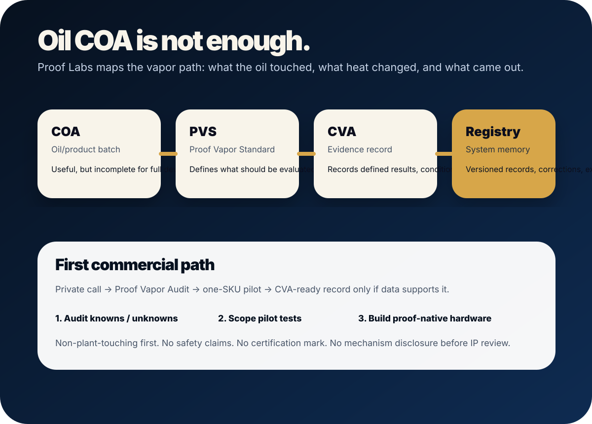

Proof Labs in one page.
A simple explanation for partners, counsel, advisors, and serious operators. Private staging only — not a public launch.
Oil COA is not enough. Show the vapor path.
Proof Labs is building the full-lifecycle proof layer for cannabis vapor: material-path mapping, heating-element validation, aging/storage studies, controlled thermal testing, aerosol analysis, CVA records, registry infrastructure, and proof-native hardware standards.
Private one-pager. Not for public distribution.

The trust stack is incomplete.
COAs can speak to oil/product batches. They do not fully answer what the oil touched in the device, what heat changed, or what came out after storage and use.
Full-lifecycle vapor proof.
Proof Vapor Standard defines the evaluation. Proof Vapor Audit maps knowns and unknowns. A one-SKU pilot applies a defined test matrix. CVA records results and limits.
Standard + data + registry + IP.
The moat is not one test or one patent. It is the compounding system: protocols, benchmark data, records, lab network, partner contracts, mark governance, and proof-native hardware.
No overclaims.
No safety claims. No medical claims. No Proof Verified mark yet. No cannabis sales. No mechanism disclosure before IP review. Partners can use the standard; they do not own it.
Private call → Proof Vapor Audit → one-SKU pilot → CVA-ready record only if data supports it.
The first EVIDENCE ask is not a funding ask or a hardware reveal. It is a private operator reality-check call, then a narrow audit if there is real fit.